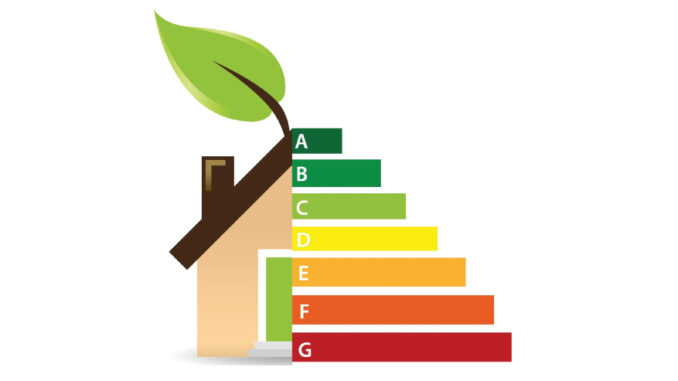
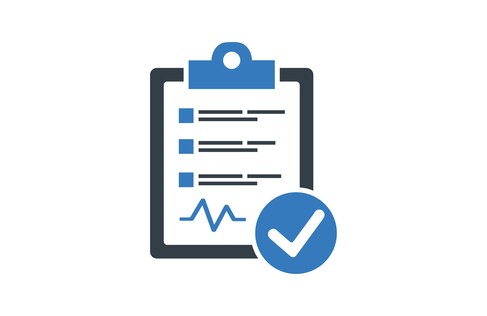
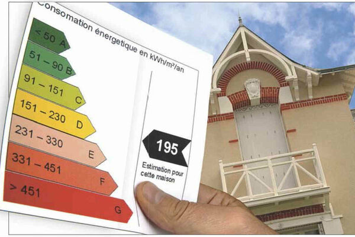

BUREAU D'ÉTUDES ET DE CONSEIL
Audit énergétique
Le bilan
Le bilan vous fournit une vision précise de votre consommation énergétique actuelle et des opportunités d'amélioration.
La simulation
La simulation offre une estimation précise des résultats attendus en efficacité énergétique.
Le rapport d'audit
Le rapport d'audit résume les résultats de l'audit énergétique et propose des actions d'amélioration.

Comprendre
Un audit énergétique
Un audit énergétique est une évaluation détaillée de la consommation d'énergie d'un bâtiment permettant d'identifier les sources de gaspillage d'énergie et de proposer des solutions personnalisées pour améliorer l'efficacité énergétique.
L'objectif d'un audit énergétique est de réduire les coûts énergétiques, d'optimiser l'utilisation des ressources et de diminuer l'impact environnemental de votre bâtiment.
Demander un audit énergétiqueLes étapes d'un audit énergétique
Faire une visite du logement
Nous profitons de cette visite pour clarifier le plan de la maison, pour identifier le modèle constructif et les matériaux utilisés et réaliser un premier relevé thermique des ouvertures (portes et fenêtres). Différents documents sont demandés, tels que les factures d'énergie consommée de l'année passée, le permis de construire, le plan ou, à défaut, un croquis du bien immobilier.
Comprendre
L'intérêt d'un audit énergétique
Moha7vz réalise votre
AUDIT ÉNERGÉTIQUE
Un audit énergétique consiste en une évaluation approfondie destinée à examiner la consommation d'énergie d'un bâtiment, d'une installation ou d'un procédé. Voici les différentes étapes du processus :
L'audit débute par la préparation. L'auditeur réunit des données telles que les plans des lieux, les factures d'énergie, les contrats de fourniture et les équipements en place. Cette phase permet de cerner les habitudes de consommation et de fixer les limites de l'audit.
Une fois les informations collectées, l'auditeur se rend sur site pour examiner les installations. Il vérifie le bon fonctionnement des équipements (chauffage, ventilation, éclairage, refroidissement, etc.) et observe les pratiques courantes. Il peut aussi interroger le personnel pour mieux comprendre les comportements influant sur la consommation énergétique.
Les informations recueillies sont ensuite examinées en détail. L'auditeur repère les points de consommation énergétique élevés et les potentiels dysfonctionnements. Il peut utiliser des outils logiciels pour simuler la consommation et comparer les résultats aux normes ou standards en vigueur.
Sur la base de cette analyse, l'auditeur recommande des actions pour optimiser l'efficacité énergétique. Cela peut aller de simples changements, comme le remplacement des ampoules par des LED, à des solutions plus complexes, telles que l'isolation des bâtiments ou l'installation de systèmes énergétiques plus performants.
Un rapport complet est ensuite élaboré, présentant les résultats de l'étude ainsi que les recommandations. Il inclut souvent une analyse de rentabilité pour aider à prioriser les investissements selon les gains énergétiques et financiers.
Si les recommandations sont adoptées, l'auditeur peut accompagner leur mise en place. Cela comprend la supervision des travaux, la vérification des performances des actions entreprises, et la réévaluation continue pour s'assurer que les économies d'énergie prévues sont bien réalisées.
Ainsi, un audit énergétique permet d'optimiser la gestion énergétique, tout en réduisant l'impact environnemental et en générant des économies significatives.

Audit réglementaire pour particuliers
Notre équipe d'experts effectue une visite minutieuse et détaillée de votre bien afin d'analyser en profondeur ses caractéristiques énergétiques.
Nous procédons à une étude approfondie de votre bien, un diagnostic immobilier et établissons un rapport détaillé qui met en lumière les résultats de notre analyse énergétique.
Nous identifions différents scénarios possibles de travaux, en prenant en compte vos besoins et objectifs spécifiques, afin de vous proposer des solutions adaptées à votre situation.
Une fois les différentes étapes de l'audit énergétique réalisées, nous procédons à l'établissement d'un rapport détaillé. Ce rapport récapitule toutes les informations recueillies, les résultats de l'analyse, les recommandations de travaux et les différents scénarios d'amélioration envisagés. Il vous est ensuite remis, vous fournissant ainsi une vision claire et complète des actions à entreprendre pour optimiser l'efficacité énergétique de votre habitation.
Moha7vz réalise votre
Audit incitatif
L'audit incitatif est une opportunité unique pour les propriétaires, souhaitant améliorer l'efficacité énergétique de leur habitation.
En réalisant un audit énergétique via un bureau d'étude qualifié, vous pouvez bénéficier d'une prime d'incitation à la rénovation énergétique accordée par l'État.
Notre équipe est prête à réaliser un bilan thermique de votre logement. Cette prime, calculée en fonction de vos revenus et de votre avis d'imposition, contribue à réduire le coût de l'audit.
Elle vise à encourager les propriétaires à entreprendre des travaux de rénovation énergétique en offrant un soutien financier significatif.

Audit incitatif pour particuliers
Notre équipe d'experts effectue une visite minutieuse et détaillée de votre bien afin d'analyser en profondeur ses caractéristiques énergétiques.
Nous procédons à une étude approfondie de votre bien et établissons un rapport détaillé qui met en lumière les résultats de notre analyse énergétique.
Nous identifions différents scénarios possibles de travaux, en prenant en compte vos besoins et objectifs spécifiques, afin de vous proposer des solutions adaptées à votre situation.
Une fois les différentes étapes de l'audit énergétique réalisées, nous procédons à l'établissement d'un rapport détaillé. Ce rapport récapitule toutes les informations recueillies, les résultats de l'analyse, les recommandations de travaux et les différents scénarios d'amélioration envisagés. Il vous est ensuite remis, vous fournissant ainsi une vision claire et complète des actions à entreprendre pour optimiser l'efficacité énergétique de votre habitation.
Notre approche d'audit incitatif se distingue par notre engagement à rester en totale cohérence avec nos clients. Nous prenons en compte leurs besoins spécifiques ainsi que les capacités de leur maison pour envisager les travaux les plus appropriés. Notre objectif est de fournir des recommandations personnalisées et réalistes, garantissant ainsi une démarche énergétique efficace et adaptée à chaque situation.